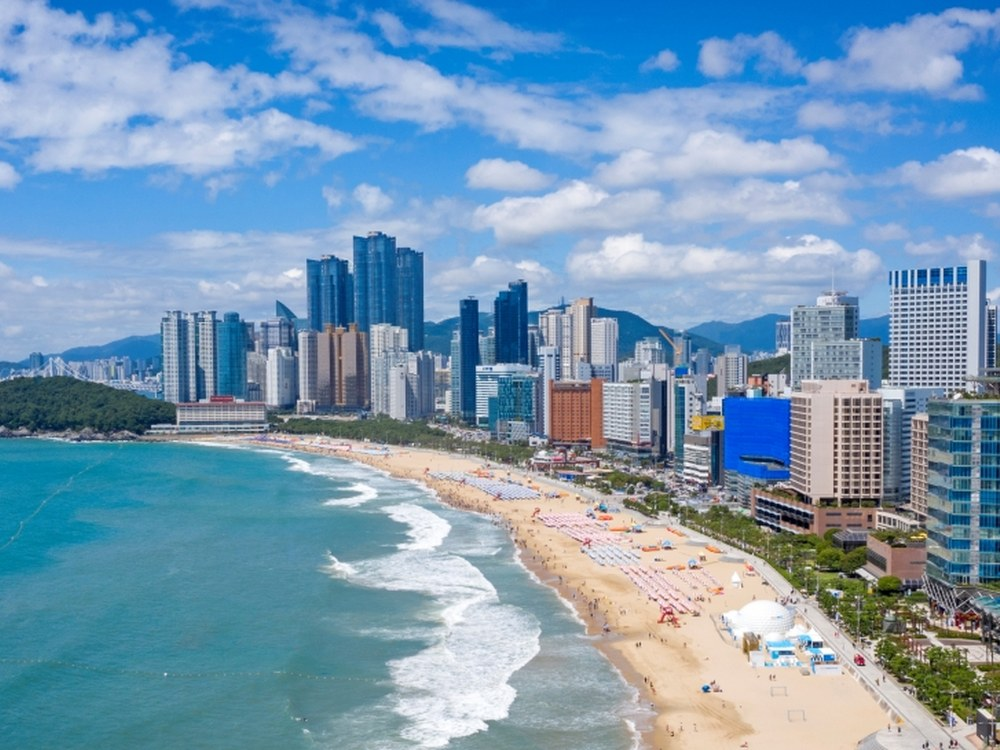
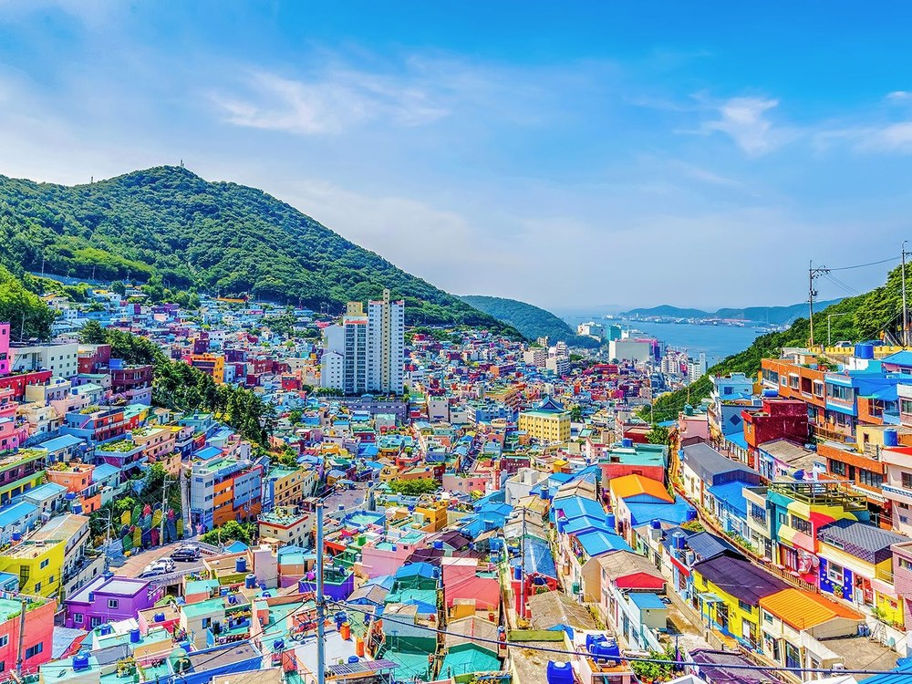
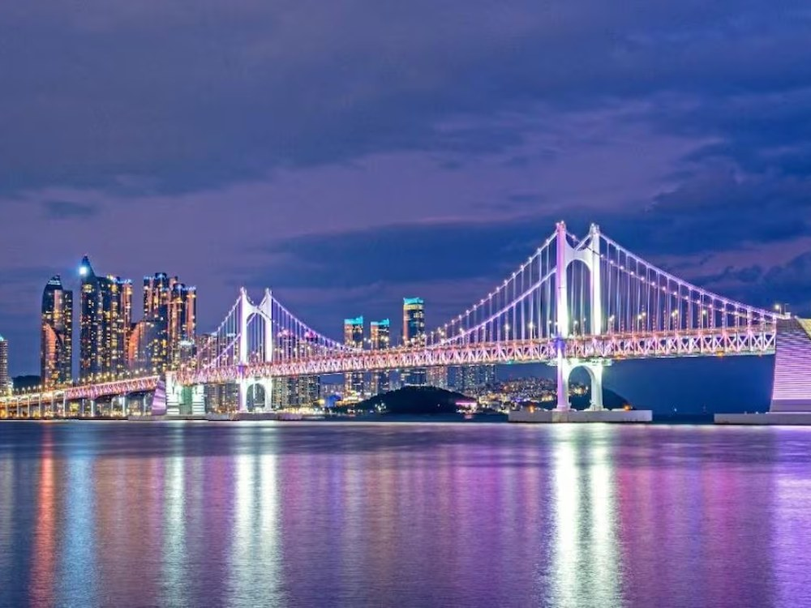

부산 소개
부산은 대한민국 제2의 도시이자 최대 항구 도시입니다. 해운대와 광안리의 넓은 바다, 산비탈을 알록달록 물들인 감천문화마을, 밤이면 빛나는 광안대교까지— 도시와 자연, 낮과 밤이 모두 다른 매력을 지닌 여행지입니다.
대표 명소


영상으로 만나는 부산 바다
부산 먹거리
돼지국밥
진한 사골 육수에 부드러운 돼지고기를 넣은 부산의 대표 소울푸드입니다.
밀면
피란 시절 냉면 대신 밀가루로 만든, 부산에서 태어난 시원한 면 요리입니다.
씨앗호떡
바삭한 호떡 안에 각종 씨앗을 가득 넣은 남포동 길거리 간식입니다.